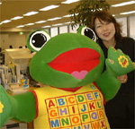
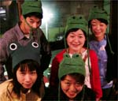
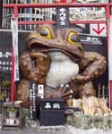
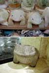
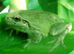

出社したらカエルにオハヨー！ 【帝都発あけみ同志記者】つい先日までは毎朝出社後、このでかがえるに「おはよー！」するのが日課だったのですが。 4月からとなりのビルに異動になり、彼に会えないのが残念・・・。ちまたでは、『カエルが二匹いる・・・』と言われた写真を送ります。あーん、さみしい。。。（涙）【全国かえる奉賛会】おおーこういう素晴らしい会社があったら、大王も毎日の出勤が辛くないのだが。世をしのぶ仮の姿とかいえ、大王のサラリーマン稼業も厳しい折柄、職場にカエルがいるって素晴らしいではないかあ。さらに素晴らしいのは、あけみ同志記者の満面の笑顔であろうかあああああっ！かえる顔の人は家庭に幸福をもたらすのであるうう！夫なり彼氏なりは、きっと幸福なりよーっ！！
 かえる展４会期は６月６日から９日！【福岡発かえる展４実行委員会】かえる展４実行委員会は、福岡市中央区今泉の某喫茶店で、蓮かえる実行委員長のもと、今年の会期を、６月６日から９日までとすることを決めた。またサッカーのワールドカップ開催と重なるため、日韓サッカーチームの健闘を願い『ケロカップ２００２／日韓共催ワールドカップを成功させよう！』という、副題とともに、今年もやってやるぞおおおおおっ！ 閉店まぎわの喫茶店で、全員でカエル帽を着用して気勢をあげたのであったあああああ。 福岡かえる展４の公式ページ
ど迫力！本場筑波の『願いガマ』！ 【がま聖都・筑波市発けろ同志記者】こんにちは。昨年の平成13年10月7日号に由布院の記事をのせていただいた「けろ」です。わたしも、ちゃくちゃくと蛙グッズを増やして、日々カエラーの道に精進しております。 さて今回は私が参加しているネット上のコミュニティーに蛙情報の提供をお願いして、友人から送ってもらった写真を送ります。筑波市にあるという「願いガマ」ちょっと恐面の蛙さんですが、みんなの願いを聞いてくれる優しいガマ様なのです。やはり蛙は偉大な存在なのだな、と今更ながら思うのでありました。
【全国かえる奉賛会】ぐわーっ。ど迫力のがまなり。さすがに、ガマの本場、筑波のがまだけあります。このがまに願をかけたら、かなわぬことはなさそうだ。かなわないときは、願いがま本体が出動して、願いをかなえてくれるはずだ。ああああああ。頼もしいーっ
 釜山で石のゲコゲコ発見！【韓国発=オノミカ様】プサンを歩いていたら、カエルがあちこちにいました。出発前にカエル新聞を読んでいたせいかなーっ。これからは賢い女は、ネットでカエル新聞を読むのがステキですよねーっ。ところで、このカエルたちは石でせきているんですが、韓国は、カエルは固いものと受け止められているのでしょうか。みんな、かたーい石のカエルグッズでした。
ではでは。
かえる家族ケローッピーセブンさんが『けろの宮』建立！ 【東京発ケロッピーセブン同志記者】うちのペットのアマガエルの画像を載せたページをスタートしました。アマガエル好きな人は見に来てください。【全国かえる奉賛会】おおー。あまがえるを集めたお宮ができたなんて。みんなで参拝にゆきましょう。
投稿採用者に武功カエル徽章を授与！ |


かえる古新聞過去に取り上げた記事を見出し付きで一覧したい人は、ここをクリック◆創刊号を見る◆先週号を見る◆話題の号を見る◆かえる新聞の昔を読む
|
私も入っています。。全国かえる奉賛会
大王様に会うには、このバナーをクリック。ずっと奥に写真館があるぞ。全国かえる奉賛会に入会するには、自分のホームページのどこかに、下の部分を追加するとバナーがリンク付きで表示されるぞ。どんどん入会しましょー |


|